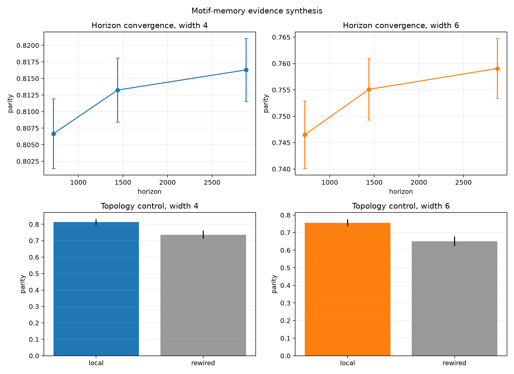
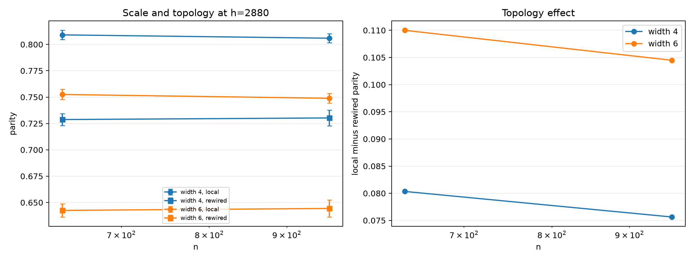
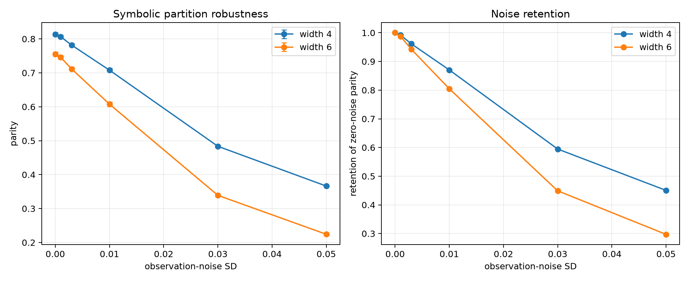
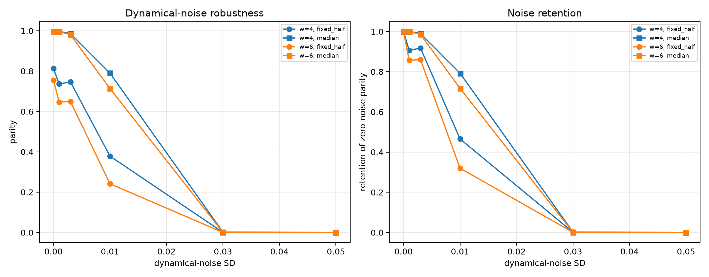
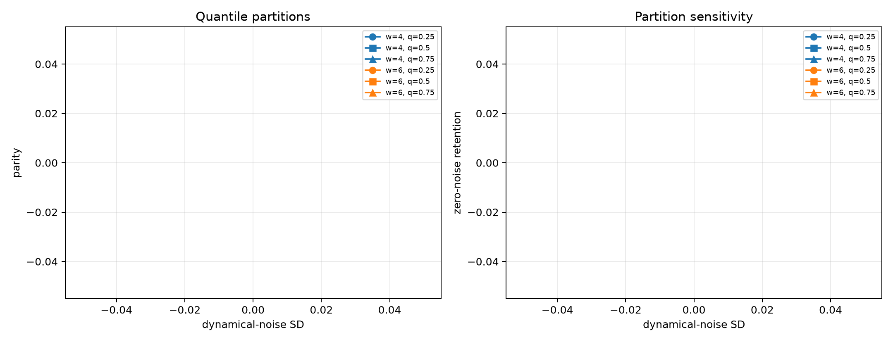
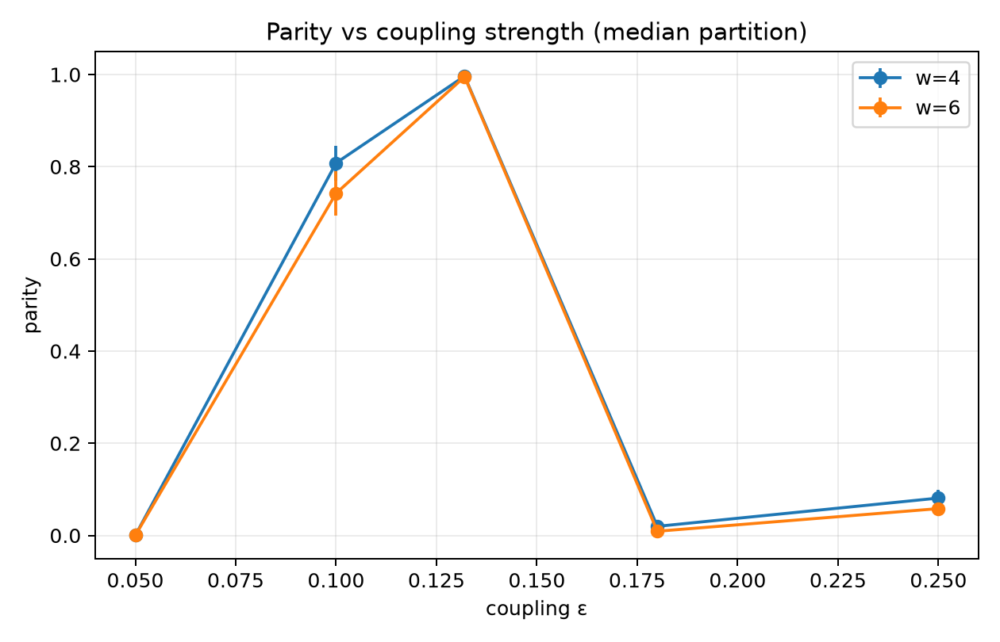
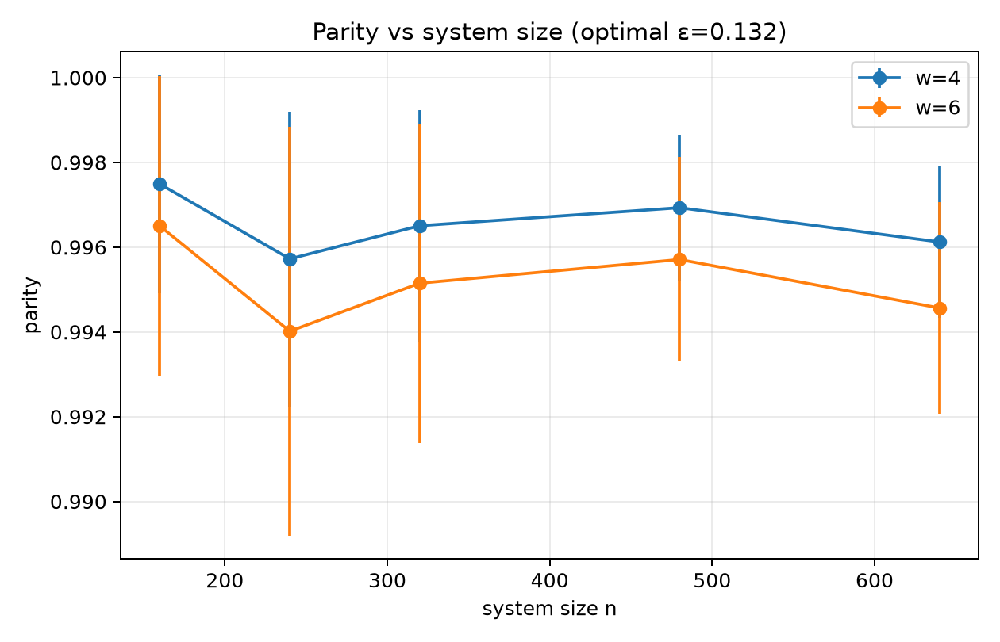
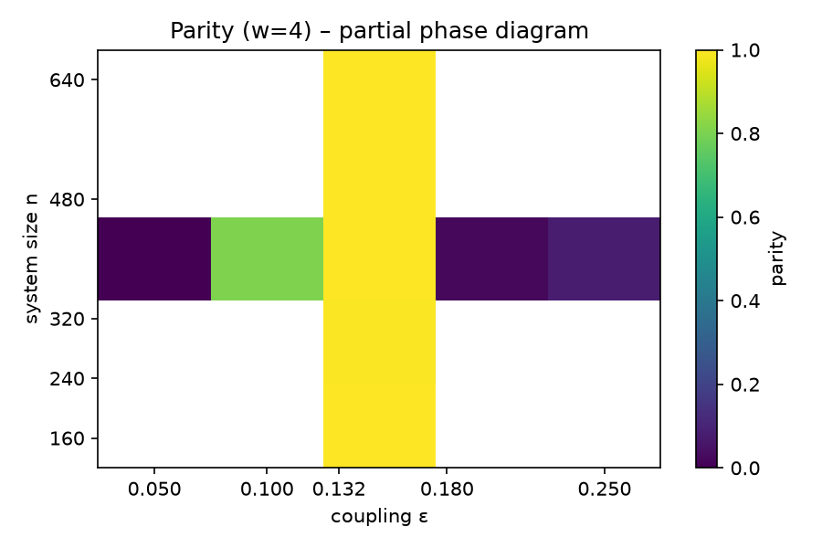

This dashboard aggregates empirical evidence for a reproducible regime‑level phenomenon: parity‑biased motif memory. The system is a ring of logistic maps with diffusive coupling (r=3.8625, ε=0.132). A binary symbolic field is derived by thresholding, local motifs of width 4/6 are encoded, and the parity observable measures even–odd lag autocorrelation contrast.
All experiments use 12 independent seeds unless noted. Artifacts reside in ../../shared_space/.

| Width | Mean Parity ± SD |
|---|---|
| 4 | 0.813248 ± 0.016800 |
| 6 | 0.755107 ± 0.020219 |

Local coupling yields significantly higher parity than degree‑preserving random rewiring across sizes 320–960.


The median partition preserves parity far better under dynamical perturbations.

Only the median (q = 0.5) cut shows high resilience; extreme quantiles behave like the fixed‑half case.

| ε | Width | Mean Parity ± SD |
|---|---|---|
| 0.050 | 4 | 0.000141 ± 0.000290 |
| 0.050 | 6 | 0.000099 ± 0.000175 |
| 0.100 | 4 | 0.808023 ± 0.037572 |
| 0.100 | 6 | 0.742281 ± 0.048308 |
| 0.132 | 4 | 0.996506 ± 0.002731 |
| 0.132 | 6 | 0.995150 ± 0.003773 |
| 0.180 | 4 | 0.019732 ± 0.001821 |
| 0.180 | 6 | 0.009060 ± 0.001316 |
| 0.250 | 4 | 0.081076 ± 0.018600 |
| 0.250 | 6 | 0.058188 ± 0.016793 |
Parity peaks sharply at ε ≈ 0.132, confirming an optimal coupling window for motif memory.

| n | Width | Mean Parity ± SD |
|---|---|---|
| 160 | 4 | 0.997488 ± 0.002576 |
| 160 | 6 | 0.996498 ± 0.003543 |
| 240 | 4 | 0.995724 ± 0.003480 |
| 240 | 6 | 0.994016 ± 0.004820 |
| 320 | 4 | 0.996506 ± 0.002731 |
| 320 | 6 | 0.995150 ± 0.003773 |
| 480 | 4 | 0.996930 ± 0.001729 |
| 480 | 6 | 0.995707 ± 0.002413 |
| 640 | 4 | 0.996121 ± 0.001794 |
| 640 | 6 | 0.994564 ± 0.002497 |
Motif memory remains near‑perfect across a wide range of system sizes, confirming finite‑size stability.

Heatmap shows parity values where data exist: vertical line at ε = 0.132 (n‑sweep) and horizontal line at n = 320 (ε‑sweep). High parity occupies a narrow corridor around the optimal coupling.
Pending – World C job job_nex_n2_pro_1790564611_ee20 will deliver motif_rqa_parity_det_scatter.png and related metrics.
Pending – World C job job_nex_n2_pro_1790564345_0a75 will deliver comparison plots.
Full synthesis document: motif_memory_comprehensive_synthesis.md